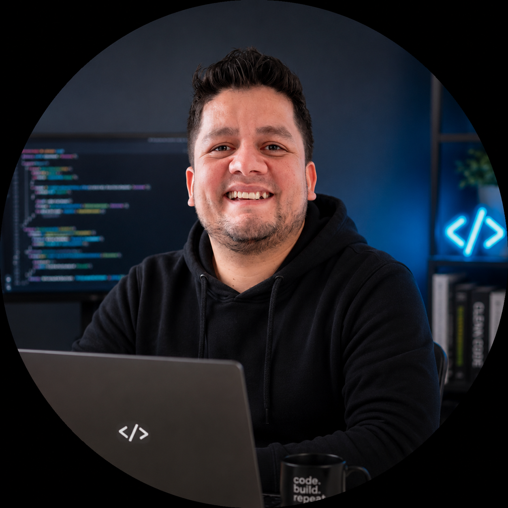

Desarrollo de software, web y producto digital
Andres Prias
Desarrollador de software enfocado en construir experiencias digitales modernas, soluciones practicas y productos orientados a resolver problemas reales.
Software, web y producto digital

Sobre mi
Diseño y desarrollo soluciones que se sienten claras desde el primer clic.
Hola, soy Andrés Prias. Un desarrollador de software enfocado en construir experiencias digitales modernas y soluciones prácticas.
Software a medida
Desarrollo web
Ecommerce
Trazabilidad
Marca personal
01
Perfil profesional
Mi interés por la tecnología me ha llevado a desarrollar aplicaciones, sitios web y proyectos que combinan diseño, funcionalidad y una visión orientada a resolver problemas reales.
02
Stack en crecimiento
Actualmente continúo fortaleciendo mis habilidades en desarrollo web, ingeniería de software y creación de productos digitales con bases sólidas y mantenibles.
03
Forma de trabajo
Me enfoco en entender el problema, ordenar la experiencia y construir soluciones prácticas que conecten diseño, datos y operación.
Construyo interfaces modernas, automatizaciones y plataformas que conectan operacion, datos y experiencia de usuario.
Software a medida
Desarrollo web
Ecommerce
Trazabilidad
Marca personal
Sobre mi
Hola, soy Andrés Prias. Un desarrollador de software enfocado en construir experiencias digitales modernas y soluciones prácticas. Mi interés por la tecnología me ha llevado a desarrollar aplicaciones, sitios web y proyectos que combinan diseño, funcionalidad y una visión orientada a resolver problemas reales. Actualmente continúo fortaleciendo mis habilidades en desarrollo web, ingeniería de software y creación de productos digitales.
Proyectos destacados
Sistemas con uso real y una presentacion cuidada.
Gestion operacional
Sistema de Gestion y Trazabilidad
Plataforma para controlar registros, estados y seguimiento de procesos con una base clara para auditoria y toma de decisiones.
Producto comercial
Megabyte MB
Experiencia digital pensada para presentar una marca tecnologica con claridad, confianza y capacidad de crecimiento.
Conversion y ventas
Ecommerce y Optimizacion Comercial
Arquitectura visual y funcional para vender mejor: catalogo, rutas de compra y optimizacion de la experiencia comercial.
Identidad profesional
Marca Personal de Desarrollo Web
Sistema de presencia digital para comunicar habilidades, proyectos y valor profesional con una narrativa memorable.
Mini juego profesional
Mini Juego
Encuentra y elimina tantos bugs como puedas en 30 segundos. Tu mejor puntuacion queda guardada localmente en este navegador.
Capacidades
De la idea al sistema usable.
Un enfoque que mezcla criterio de producto, desarrollo web moderno y estructura de software para proyectos que necesitan verse bien y funcionar mejor.
Aplicaciones web
Interfaces responsive, rapidas y pensadas para que el usuario encuentre valor sin friccion.
Sistemas internos
Herramientas para ordenar informacion, automatizar tareas y dejar trazabilidad de operaciones importantes.
Optimización comercial
Mejoras en ecommerce, presentacion de oferta y flujos orientados a conversion.
Metodo
Claridad primero, tecnologia despues.
Entender
Objetivo, publico, procesos y restricciones del proyecto.
Diseñar
Estructura visual, flujos principales y arquitectura de datos.
Construir
Desarrollo iterativo con detalles de rendimiento, mantenimiento y experiencia.
Mejorar
Medicion, ajustes y nuevas capacidades segun el uso real.
Contacto